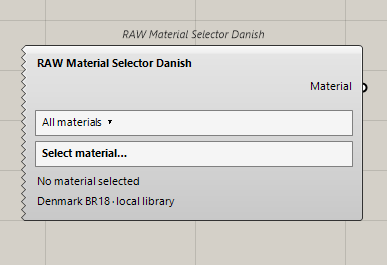
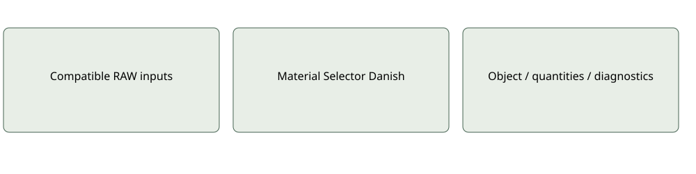

Materials
RAW Material Selector Danish
Selects one pinned Danish BR18/Table 7 material with unchanged units and metadata.
Inputs: None; family and selection dialogue in body
Outputs: Material
Selecting is not creating or validating a dataset.Use and limitations
Optional and mode-specific ports may remain serialized when hidden. Inspect quantities, source provenance and coverage before interpreting results. A missing input is not an inferred zero.